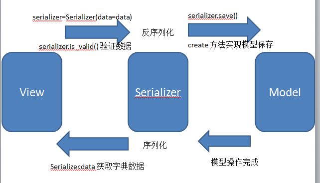
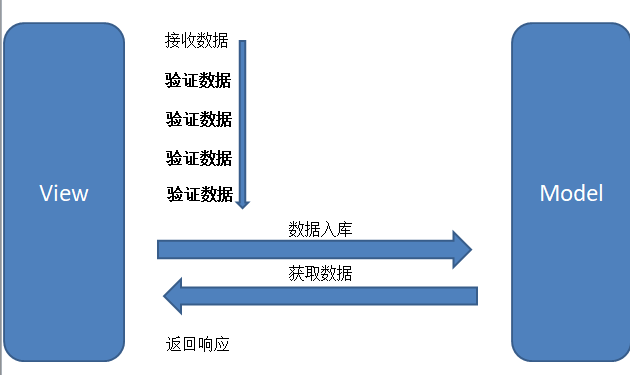

Django REST framework
1.
Django REST framework流程
1.1.
RESTfull
1.1.1.
Web应用模式
1.1.2.
认识RESTful
1.1.3.
RESTful设计思想
1.1.3.1.
请求相关
1.1.3.2.
响应相关
1.1.4.
项目准备
1.1.5.
使用Django开发REST 接口
1.1.6.
明确REST接口开发的核心任务
1.2.
Django REST framework
1.2.1.
环境安装与配置
2.
序列化和反序列化
2.1.
Serializer字段和选项
2.2.
序列化使用
2.2.1.
基本使用
2.2.2.
关联对象嵌套序列化
2.3.
反序列化使用
2.3.1.
验证
2.3.1.1.
字段类型
2.3.1.2.
字段选项
2.3.1.3.
validate\_fieldname
2.3.1.4.
validate
2.3.2.
保存
2.4.
模型类序列化器ModelSerializer
2.5.
进阶使用
3.
视图
3.1.
Request 与 Response
3.1.1.
Request
3.1.2.
Response
3.2.
视图
3.2.1.
APIView\(一级\)
3.2.2.
GenericAPIView\(二级\)
3.2.3.
Mixin
3.2.4.
子类视图\(三级\)
3.3.
视图集ViewSet
3.3.1.
ViewSet
3.3.2.
GenericViewSet
3.3.3.
ModelViewSet
3.3.4.
ReadOnlyModelViewSet
3.4.
路由Router
4.
高级功能
4.1.
认证Authentication
4.2.
权限Permissions
4.3.
分页Pagination
本書使用 GitBook 釋出
django项目
重点
序列化
基本使用
关联对象嵌套序列化
反序列化
验证
保存
ModelSerialization
使用
指定字段

与项目一的模式对比
